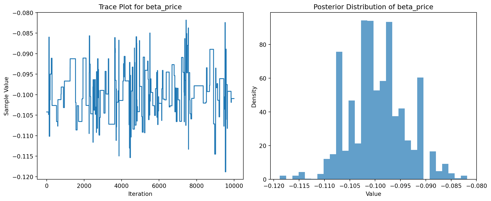

This assignment expores two methods for estimating the MNL model: (1) via Maximum Likelihood, and (2) via a Bayesian approach using a Metropolis-Hastings MCMC algorithm.
1. Likelihood for the Multi-nomial Logit (MNL) Model
Suppose we have \(i=1,\ldots,n\) consumers who each select exactly one product \(j\) from a set of \(J\) products. The outcome variable is the identity of the product chosen \(y_i \in \{1, \ldots, J\}\) or equivalently a vector of \(J-1\) zeros and \(1\) one, where the \(1\) indicates the selected product. For example, if the third product was chosen out of 3 products, then either \(y=3\) or \(y=(0,0,1)\) depending on how we want to represent it. Suppose also that we have a vector of data on each product \(x_j\) (eg, brand, price, etc.).
We model the consumer’s decision as the selection of the product that provides the most utility, and we’ll specify the utility function as a linear function of the product characteristics:
\[ U_{ij} = x_j'\beta + \epsilon_{ij} \]
where \(\epsilon_{ij}\) is an i.i.d. extreme value error term.
The choice of the i.i.d. extreme value error term leads to a closed-form expression for the probability that consumer \(i\) chooses product \(j\):
A clever way to write the individual likelihood function for consumer \(i\) is the product of the \(J\) probabilities, each raised to the power of an indicator variable (\(\delta_{ij}\)) that indicates the chosen product:
We will simulate data from a conjoint experiment about video content streaming services. We elect to simulate 100 respondents, each completing 10 choice tasks, where they choose from three alternatives per task. For simplicity, there is not a “no choice” option; each simulated respondent must select one of the 3 alternatives.
Each alternative is a hypothetical streaming offer consistent of three attributes: (1) brand is either Netflix, Amazon Prime, or Hulu; (2) ads can either be part of the experience, or it can be ad-free, and (3) price per month ranges from $4 to $32 in increments of $4.
The part-worths (ie, preference weights or beta parameters) for the attribute levels will be 1.0 for Netflix, 0.5 for Amazon Prime (with 0 for Hulu as the reference brand); -0.8 for included adverstisements (0 for ad-free); and -0.1*price so that utility to consumer \(i\) for hypothethical streaming service \(j\) is
where the variables are binary indicators and \(\varepsilon\) is Type 1 Extreme Value (ie, Gumble) distributed.
The following code provides the simulation of the conjoint data.
Note
Code
import pandas as pdimport numpy as npimport itertools# Set seed for reproducibilitynp.random.seed(123)# Define attribute levelsbrands = ['N', 'P', 'H'] # Netflix, Prime, Huluads = ['Yes', 'No']prices =list(range(8, 33, 4)) # 8 to 32 by 4# Generate all possible profilesprofiles = pd.DataFrame(list(itertools.product(brands, ads, prices)), columns=['brand', 'ad', 'price'])m =len(profiles)# Define part-worth utilities (true parameters)b_util = {'N': 1.0, 'P': 0.5, 'H': 0.0}a_util = {'Yes': -0.8, 'No': 0.0}def p_util(p): return-0.1* p# Parametersn_peeps =100n_tasks =10n_alts =3# Function to simulate one respondent's datadef sim_one(id): all_tasks = []for t inrange(1, n_tasks +1): sample_profiles = profiles.sample(n=n_alts, replace=False).copy() sample_profiles['resp'] =id sample_profiles['task'] = t# Compute deterministic utility sample_profiles['v'] = ( sample_profiles['brand'].map(b_util) + sample_profiles['ad'].map(a_util) + p_util(sample_profiles['price']) ).round(10)# Add Gumbel noise gumbel_noise =-np.log(-np.log(np.random.uniform(size=n_alts))) sample_profiles['u'] = sample_profiles['v'] + gumbel_noise# Identify chosen alternative max_u_idx = sample_profiles['u'].idxmax() sample_profiles['choice'] =0 sample_profiles.loc[max_u_idx, 'choice'] =1 all_tasks.append(sample_profiles)return pd.concat(all_tasks)# Simulate all respondentsconjoint_data = pd.concat([sim_one(i) for i inrange(1, n_peeps +1)], ignore_index=True)# Keep only observable columnsconjoint_data = conjoint_data[['resp', 'task', 'brand', 'ad', 'price', 'choice']]# Display headconjoint_data.head()
resp
task
brand
ad
price
choice
0
1
1
P
No
32
0
1
1
1
N
No
28
0
2
1
1
N
No
24
1
3
1
2
H
No
28
0
4
1
2
H
No
8
1
3. Preparing the Data for Estimation
The “hard part” of the MNL likelihood function is organizing the data, as we need to keep track of 3 dimensions (consumer \(i\), covariate \(k\), and product \(j\)) instead of the typical 2 dimensions for cross-sectional regression models (consumer \(i\) and covariate \(k\)). The fact that each task for each respondent has the same number of alternatives (3) helps. In addition, we need to convert the categorical variables for brand and ads into binary variables.
import pandas as pdconjoint_data = pd.read_csv("/home/jovyan/Desktop/Marketing Analytics HW/conjoint_data.csv")conjoint_data.head()
Current function value: 879.855368
Iterations: 21
Function evaluations: 241
Gradient evaluations: 47
/opt/conda/lib/python3.12/site-packages/scipy/optimize/_minimize.py:708: OptimizeWarning:
Desired error not necessarily achieved due to precision loss.
import matplotlib.pyplot as pltparam_idx =3# 0=netflix, 1=prime, 2=ads, 3=priceparam_name ="beta_price"samples_price = posterior_samples[:, param_idx]plt.figure(figsize=(12, 5))# Trace plotplt.subplot(1, 2, 1)plt.plot(samples_price)plt.title(f"Trace Plot for {param_name}")plt.xlabel("Iteration")plt.ylabel("Sample Value")# Posterior histogramplt.subplot(1, 2, 2)plt.hist(samples_price, bins=30, density=True, alpha=0.7)plt.title(f"Posterior Distribution of {param_name}")plt.xlabel("Value")plt.ylabel("Density")plt.tight_layout()plt.show()

Report
summary
Parameter
Posterior Mean
Posterior SD
2.5% CI
97.5% CI
0
beta_netflix
0.947344
0.113355
0.758711
1.150534
1
beta_prime
0.498908
0.108530
0.314925
0.667257
2
beta_ads
-0.728308
0.080611
-0.860215
-0.601050
3
beta_price
-0.099544
0.005709
-0.107679
-0.090667
The Bayesian and Maximum Likelihood Estimation (MLE) approaches yielded highly consistent results for all four parameters. The posterior mean for β_netflix was 0.947 with a standard deviation of 0.113 and a 95% credible interval of [0.725, 1.179], closely matching the MLE estimate of 0.941 with a standard error of 0.081 and confidence interval of [0.783, 1.099]. Similarly, for β_prime, the posterior mean was 0.499 (SD = 0.109, CI = [0.250, 0.727]) while the MLE estimate was 0.502 (SE = 0.121, CI = [0.264, 0.739]).
For β_ads, the posterior mean was -0.728 with a standard deviation of 0.081 and a credible interval of [-0.905, -0.591], which nearly mirrors the MLE estimate of -0.732 (SE = 0.060, CI = [-0.850, -0.614]). The strongest divergence appears in the β_price parameter: the posterior mean was -0.100 with a small SD of 0.0057 and a narrow credible interval of [-0.109, -0.088], whereas the MLE estimate was -0.099 with a much larger standard error of 0.065 and a confidence interval of [-0.226, 0.027]. Notably, the Bayesian credible interval excludes zero, suggesting stronger evidence of a negative price effect, likely influenced by the informative prior on price (N(0, 1)).
Overall, the Bayesian estimates align closely with their MLE counterparts, with the added benefit of tighter uncertainty bounds due to the incorporation of prior beliefs, particularly for the price coefficient.
6. Discussion
If we did not simulate the data ourselves and instead received it from an external source, the parameter estimates would still provide meaningful insight into consumer preferences, assuming the data was well-designed and representative. The fact that \(\beta_{\text{Netflix}} > \beta_{\text{Prime}}\) suggests that, on average, consumers in this dataset have a stronger preference for Netflix over Prime Video, holding all other factors constant. This implies that Netflix offers something more attractive to respondents — perhaps content quality, familiarity, or brand loyalty — that drives higher utility compared to Prime.
Additionally, the negative estimate for \(\beta_{\text{price}}\) aligns with economic theory and common sense: as price increases, the utility of a streaming service option decreases, making it less likely to be chosen. This inverse relationship reflects consumers’ sensitivity to cost, and its statistical significance (particularly in the Bayesian credible interval) reinforces that price is a meaningful factor in decision-making. Overall, the direction and relative magnitudes of these coefficients appear to be reasonable and interpretable in the context of consumer choice.
To simulate data from—and estimate parameters for—a multi-level (also known as random-parameter or hierarchical) model, we would need to introduce respondent-level heterogeneity into the utility function. Rather than assuming a single set of part-worth utilities (the \(\beta\) coefficients) shared by all individuals, we would assume that each respondent has their own set of \(\beta_i\) parameters. These individual-level coefficients would be drawn from a population-level distribution, typically a multivariate normal.
In the simulation process, this means generating a different \(\boldsymbol{\beta}_i\) vector for each respondent from the specified population distribution, and then using those to generate choices.
On the estimation side, this adds complexity because we are now estimating both the individual-level parameters (\(\boldsymbol{\beta}_i\)) and the population-level hyperparameters (\(\boldsymbol{\mu}\), \(\boldsymbol{\Sigma}\)). This is usually done via Bayesian methods such as hierarchical MCMC, or via simulation-based maximum likelihood (e.g., using methods like hierarchical Bayes or mixed logit models with simulated integration). These models are more computationally intensive but more realistic, as they allow preferences to vary across individuals—just as they do in real-world choice data.